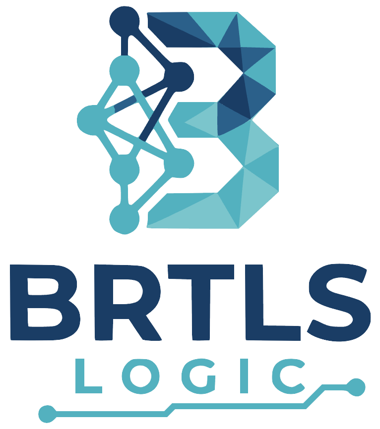

Agentic AI systems and workflow automation
Designing and building non-medtech agentic AI workflows with attention to tool use, integration, evaluation, and product fit.
Agentic AI - Software engineering - Product delivery
BRTLS LogicProject experience
A selection of domains and project types that shaped the BRTLS Logic profile. Some client and implementation details remain confidential.
Designing and building non-medtech agentic AI workflows with attention to tool use, integration, evaluation, and product fit.
Agentic AI - Software engineering - Product deliveryContributed to healthcare AI projects involving MRI, CT, cone-beam CT, microscopy, and whole-slide imaging, including technical documentation and QMS work for CE and FDA tracks.
Computer vision - ISO 13485 - Deployment lifecycleExperience across brain metastasis analysis, aneurysm detection, orthognathic planning, sperm cell detection, and cancer characterization from imaging data.
Segmentation - Detection - 2D/3D imagingDoctoral research at KU Leuven focused on understanding final infarct prediction from acute CT perfusion using convolutional neural networks.
Deep learning - Medical image computing - Model behaviorDeveloped and used deep learning tooling for medical imaging, alongside projects in tooth, breast, liver, lung, and stroke imaging.
Python - PyTorch/TensorFlow - Research engineeringHow projects are approached
Strong AI work starts with the problem framing: what decision is supported, what data is trustworthy, what failure modes matter, and what needs to be measured before anyone believes the system.
From there, BRTLS Logic helps move from experiment to implementation, keeping software quality, maintainability, and stakeholder alignment close to the technical work.